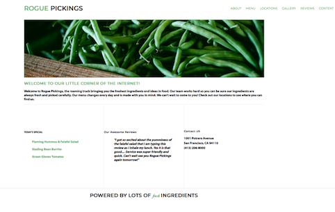

my portfolio

Rogue Pickings
HTML 5 & CSS
A composite using HTML 5 & CSS which was constructed by extracting all the information with the use of Photoshop.
Jubilee Austeen Project
HTML 5 & CSS Website
A multi-page website design
composed using HTML 5 & CSS.


Holstee Manifesto
HTML 5 & CSS Exercise
HTML 5 & CSS were used to make an inspirational message into smaller sections. I added my personalized touch in using a two different borders to categorize the sections into what I found most important and those I aspire to include more often in my life.